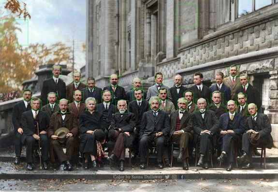
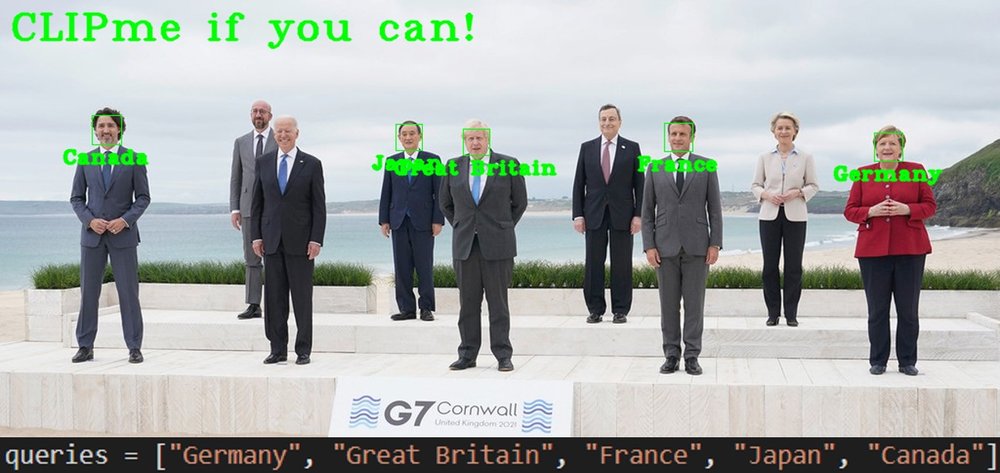
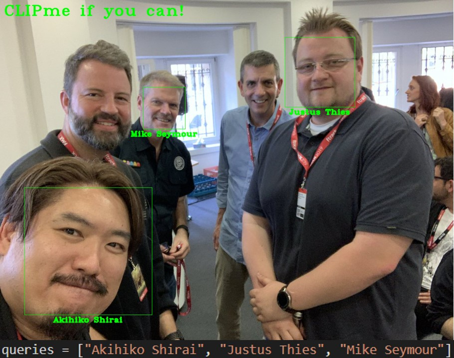

CLIPme if you can!
CLIP is a powerful tool to match images to text descriptions. It can be used for classification of ImageNet classes as shown in the original paper, but it can also be used to assign names of (famous) people to images. Specifically, we assume that we have an image and a list of names of people in the image as input (also called queries below).
In a first step, we detect faces in the input image which can give us the regions of interest: 
Using these detections, we can run the CLIP model on the cropped regions of interest and compute the matching score w.r.t. the names of people we provide as input. We annotate the original image with the results that match best with the names:

As can be seen, it works surprisingly well. Except for Hendrik Lorentz (which actually sits between Marie Curie and Albert Einstein), it matches all queries.
It also works well for other famous people, like state leaders:
Interestingly, CLIP also knows the relationship of the countries they represent: 
Obviously, I had to try it with an image of myself and it turns out that it can also annotate my face:

Conclusion:
CLIP not only stores general concepts of text and images, to some extent it is also storing information about individual people. We can also see this in the results of DALL-E-2, where we can ask to render a cat in an outfit like Napoleon.
Code:
Image Credits:
- Solvay conference 1927 - image colorized by Sanna Dullaway
- G7
- Cabinet Meeting
- FMX2019
{kind=link}
{kind=link}
{kind=link}